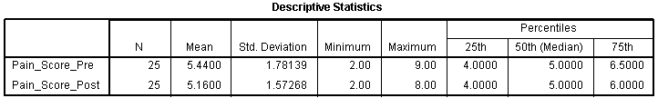
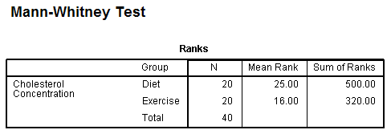

Studying Human Performance - SPSS
COURSE
Descriptive statistics
Descriptive statistics are used to describe and summarise datasets, and SPSS is very useful for the quick calculation of descriptive statistics. These can then be used for further calculations or displayed in a table or graph. The common descriptive statistics are mean, mode, median, sum, maximum, minimum, standard deviation, range, variance, standard error of the mean, skweness or kurtosis, quartimes, percentiles.

Tests
Wilcoxon
Just like when doing the calculations by hand, SPSS first ouputs a table with sum of negative and positive ranks. The cell Ties indicates how many subjects have been removed from the calculations because their rank difference was null.

Then the next table shows that SPSS calculated what is called \(W\) when doing by hand, but has converted it to a z-score.

In this case, because the significance level is inferior to 0.05, the null hypothesis can be rejected.
REPORTING: First conclude on the research question based on the significance level. Then present the results as such: z = -2.87, N =14, p < 0.01, and finally use descriptive statistics to support the result: the median.
Mann-Whitney
Similarly to Wilcoxon, the first table for Mann-Whitney outputs the ranks, but for this test they are split by group. This first table shows if there are differences between groups, that can afterwards be validated if the result is significant.

The next table shows the actual computation of the value \(U\):
In this case, because the significance level is inferior to 0.05, the null hypothesis can be rejected.
REPORTING: First conclude on the research question, then present the results using the p-value such as (p = 0.014) and use the ranks to support the result.
Friedman
The first table output is the mean ranks for each group/condition:

The next table shows the actual computation of the Friedman test, with the values Chi Square, dg, and the significance level:

In this case, because the significance level is inferior to 0.05, the null hypothesis can be rejected.
REPORTING: First conclude on the research question based on the significance level, then present the results in this format: \(\chi^2(df) = ..., p = ...\) such as \(\chi^2\)(2) = 7.600, p = 0.022. Use the median of each condition to support the results. Finally, if the results are significant, a note on possible post hoc tests should be done.
Kruskal-Wallis
This test's ouput is very similar to Friedman's, except it shows the group distributions.

In this case, because the significance level is inferior to 0.05, the null hypothesis can be rejected.
REPORTING: First conclude on the research question based on the significance level, then present the results in this format: \(\chi^2(df) = ..., p = ...\) such as \(\chi^2\)(2) = 8.520, p = 0.014. Use the mean rank of each condition to support the results. Finally, if the results are significant, a note on possible post hoc tests should be done.
T-Test (Within)
Also called T-Test Dependant, the first output of this test gives the paired sample statistics:
Then, the paired samples test table outputs the actual results of the T-Test:

In this case, because the significance level is inferior to 0.05, the null hypothesis can be rejected.
REPORTING: First conclude on the research question based on the significance level, then present the results in this format: t(df) = t_value, p = p-value, such as t(19) = -4.773, p < 0.0005 in this case. Use the descriptive statistics to support the results.
T-Test (Between)
Also called T-Test Independant, the first output of this test gives the group statistics:

Thenext table independant sample test provides the actual results of the T-test:
Levene's test is an inferential statistic used to assess the equality of variances. It tests the null hypothesis that the population variances are equal (called homogeneity of variance or homoscedasticity). If the resulting p-value of Levene's test is less than some significance level (typically 0.05), the obtained differences in sample variances are unlikely to have occurred based on random sampling from a population with equal variances. Thus, the null hypothesis of equal variances is rejected and it is concluded that there is a difference between the variances in the population. With a p-value of 0.579 here, the samples have homogeneity of variance.
Regarding the T-test, the significance level of 0.020 indicates that the null hypothesis can be rejected.
REPORTING: First conclude on the research question based on the significance level,then present the results in this format: t(df) = t_value, p = p-value, such as t(38) = 2.428, p < 0.020 in this case. Use the descriptive statistics to support the results.